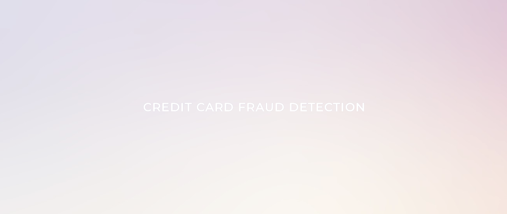
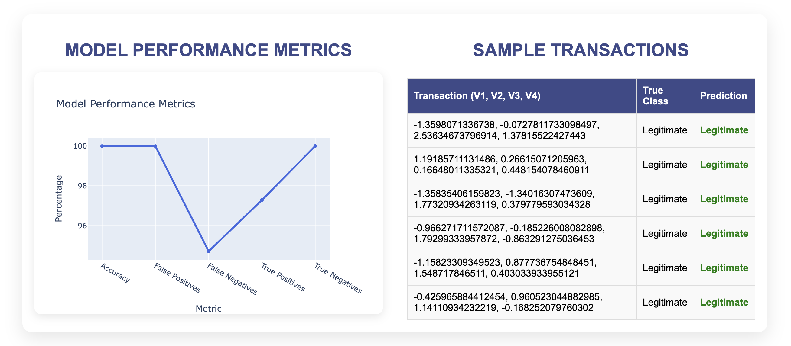
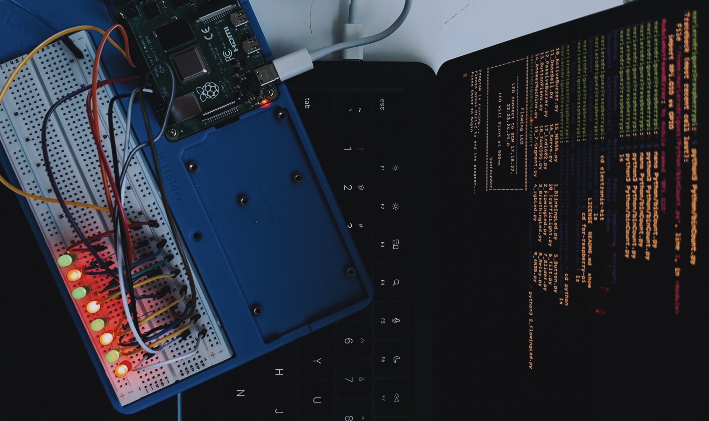
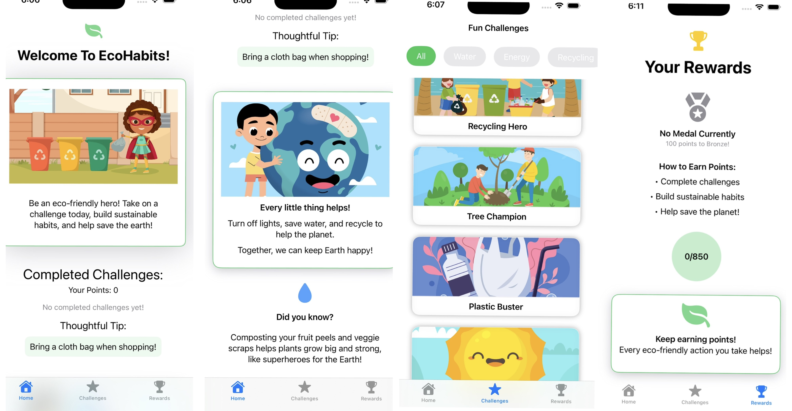

Resume
⬇

Your entry point to seamless digital experiences, brought to life by a software developer.
Feel free to click around, move things, and explore!
Atmosphere Analyzer is an environmental monitoring platform that simulates real-time sensor data with Python. It integrates AWS S3 and Lambda for scalable storage and dynamic data processing, delivering metrics through a Django backend API to a React frontend for interactive visualization.
Note: The live app is hosted on Render's free tier, so the backend may take 1-2 minutes to wake up after inactivity.
LeafMedic is an edge AI application performing real-time plant disease classification on a Raspberry Pi. It uses computer vision and a MobileNetV1 model optimized for TensorFlow Lite for on-device inference, supported by a PyQt5 interface for preview/batch processing and a curated treatment database.
A full-stack simulation platform for risk-free micro-investing. Built with React, Node.js, Express, and MongoDB, it integrates Alpha Vantage and NEWS APIs to provide real-time market data, letting users practice investment strategies and track portfolios with virtual funds.
Note: The live app is hosted on Render's free tier, so the backend may take 1-2 minutes to wake up after inactivity.
A web application for visualizing and analyzing supply chain networks in real-time. Features a React frontend and Spring Boot backend, utilizing Leaflet maps and Chart.js to map inventory, track shipments, and highlight operational bottlenecks.
Note: The live app is hosted on Render's free tier, so the backend may take 1-2 minutes to wake up after inactivity.
An interactive, voice-driven simulator for technical interviews. Candidate speech is transcribed via Groq Whisper v3, adaptive follow-up questions are generated in real-time using Llama 3 on Groq, and the browser's native Web Speech API (TTS) reads them back.
Note: The live app is hosted on Render's free tier, so the backend may take 1-2 minutes to wake up after inactivity.
A real-time credit card fraud detection system built with Python and Flask. Uses a Random Forest classifier (scikit-learn) for transaction analysis, StandardScaler preprocessing, and Plotly to visualize machine learning performance.


A collection of hardware interfacing and embedded programming projects on Raspberry Pi. Integrates sensors, motors, and displays (PIR, RFID, ultrasonic, LCD) to build real-world systems like environmental monitoring and home automation.

A gamified iOS app built with Swift and SwiftUI to encourage sustainable habits in children. Features an AI-powered assistant, real-time carbon/water footprint impact tracking, and a rewards system to incentivize eco-friendly choices.

An interactive, retro desktop-inspired portfolio website featuring draggable icons, windows, and custom-styled retro applications. Built as a fully static web application utilizing vanilla JavaScript, HTML, and CSS for optimal load times.
Drag items to Trash - Drag out to restore.